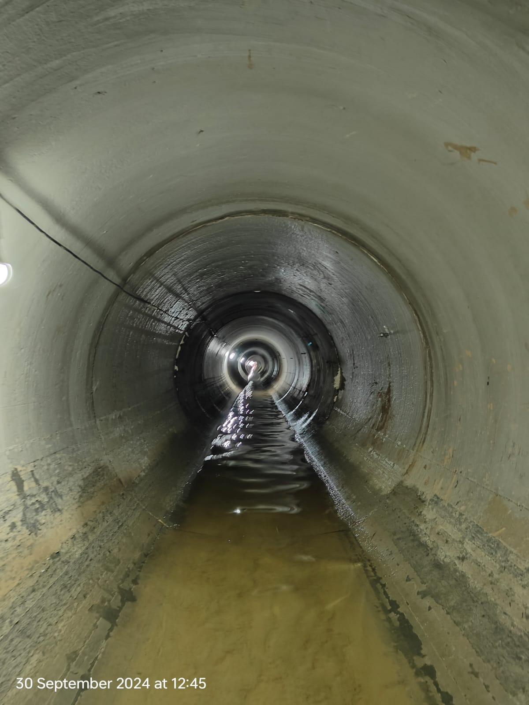

Microtunnelling
Equipment-led excavation for underground alignments.
CIVIL WORKS / BELOW THE SURFACE
Underground infrastructure shapes what is possible above it. ATOZ Infracon brings people, equipment and practical execution to that work.
EXPLORE THE STORY
01 / THE STORY
The most important part of an infrastructure project can be the part no one sees.
ATOZ Infracon Pvt Ltd is engaged in underground civil works. The photographs here show the scale of its equipment, the confined environments in which crews operate, and the coordination needed on site.

INSIDE THE ALIGNMENT / 2024 ABOVE GROUND / ON SITE
ABOVE GROUND / ON SITE02 / CAPABILITIES
Specialist work. Real-world conditions.
Equipment-led excavation for underground alignments.
Pipe installation supported by shafts and specialist machinery.
Construction and access works that support the underground route.
03 / FIELD VIEWS
Three perspectives on the work: the machine, the underground space, and the people on site.

A close view of the boring equipment prepared for underground work.

04 / THE PEOPLE
Planning, observation and execution come together where the work happens: on site.